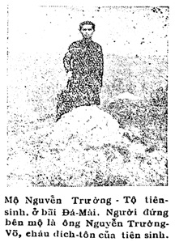

Sau hơn một nghìn năm nội thuộc nước Tàu, người mình chịu ảnh hưởng rất mạnh của Trung Quốc: Phong tục, lễ nghi, tư tưởng, văn chương thảy thảy đều bắt chước theo người phía Bắc cả. Sở dĩ người mình không bị đồng hóa với người ta là vì mình còn giữ được tiếng nói riêng của mình. Nhưng có tiếng mà không có chữ, nên ngay từ khi Sĩ Nhiệp mở mang việc học ở nước ta, người mình đã đổ xô vào học Hán tự. Trên từ sắc, chiếu, chỉ, dụ của Triều Đình, dưới đến văn khế, thư từ của dân gian đến dùng chữ Hán cả. Vả lại học hành ở nhà trường, văn bài các kỳ thi đều chỉ dùng có một thứ chữ ấy. Trải qua bao nhiêu triều đại, người mình chỉ biết trọng có chữ ngoại quốc ấy mà thôi. Tuy đã có thứ chữ Nôm để làm Việt tự, nhưng người trong nước đều cho ‘’nôm na là cha mách qué’’ không thèm dùng đến.
Mãi đến đời Nhà Nguyễn, thói ấy vẫn còn ăn sâu vào óc mọi người. Ông Nguyễn Trường Tộ tuy là một sự trở ngại lớn lao cho cuộc tiến hóa của nước mình. Ông viết: ‘’Nếu một người nói ra một câu, lại phải nhờ một người khác dịch ra, tức là một người nước khác rồi. Một nước Nam ta mà có hai thứ âm thoại, hai thứ văn tự, chẳng hóa ra một nước mà ngăn ra hai thứ người sao?’’ (Tế cấp bát điều, điều thứ tư, khoản thứ năm).
Người mình mà học chữ Tàu thì có nhiều điều bất tiện:
Một là học khó vì ‘’chữ mình học đã không phải chính âm của nước Tàu, mà cũng không phải là âm thoại của ta; khi học chữ phải dùng tâm trí để nhớ lấy các tiếng lạ, còn âm vận thì chỉ người có học biết lấy mà thôi, chứ người bất học nghe đến chẳng khác gì như nghe giọng quạ kêu, chim hót’’.
Hai là dễ sai lầm: ‘’Những người thông minh ở nước ta, đua nhau học chữ Tàu; đương lúc trai tráng, không biết làm gì để lập công nghiệp mà cứ hao công đèn sách, cặm cụi suốt năm, hình như muốn học để làm những người Tàu, nhưng đem tiếng ấy nói với người Tàu, họ không thể hiểu, mà nói với dân ngu họ cũng chẳng biết gì. Một tờ trát văn, cắt nghĩa mỗi người một khác, một chữ trong sách Luật có thể thay đổi tội tình, đơn khai từ tụng, thường bị các thầy cò múa bút nói sai, dân gian khai báo không kể được sự tình phiền phức. Vả lại khi nhà nước truyền xuống một chính lệnh gì, phải có người văn nhân cắt nghĩa cho bình dân nghe, nhưng có khi họ cắt nghĩa cho bình dân nghe, nhưng có khi họ cắt nghĩa không rõ ràng hoặc viện dẫn xuyên tạc, cho nên bọn dân đen không hiểu được ý tứ của Triều Đình, tất nhiên là bị sai lầm’’.
Vì học khó khăn như thế, nên trong nước có nhiều người thất học, nhiều người ngu dốt: ‘’Ở Âu Tây cứ mười người đàn ông có một người không biết chữ, mười người đàn bà có bốn người không biết chữ. Tuy không biết chữ, nhưng mỗi khi nghe người ta đọc những chiếu chỉ, từ trát hay là sách vở gì, đều hiểu được cả, vì rằng chữ của họ, tức là tiếng của họ’’, chứ ở nước mình giữa phái biết chữ và bọn không học có một cái hố thực sâu.
Có lẽ chính vì thế, mà bọn có học lại càng tự cao và càng khinh rẻ tiếng của mình: ‘’Thậm chí khi viết thư từ cho người khác mà viết bằng Quốc Âm thì họ cho là khinh mạn, xem sách thuốc chữ Nôm mà chữa bệnh thì họ cho là thầy dốt, nói tiếng mẹ đẻ mà không chậm vào một ít chữ Nho, thì họ cho là quê mùa. Có một hạng nữa chỉ cốt làm văn chương cho hiểm hóc khiến người ta đọc không thông nghe không hiểu mới gọi là kỳ tuyệt; phải có người thông thái giải thích, một chữ có khi đến mấy nghĩa, một ý xoay ra nhiều ngả, như vậy mới gọi là thủ đoạn của văn hào. Nhưng thực ra văn tự là để thay cho lời nói, mà nói ra thì mong cho người ta nghe hiểu rõ, chứ nếu nói mà nhiều người không hiểu, thì không phải là tiếng người nữa rồi!’’.
Muốn cho việc học phổ cập trong sân chúng một cách dễ dàng hơn, ông Nguyễn Trường Tộ yêu cầu Triều Đình cải cách chữ viết và cho đọc theo Quốc Âm.
‘’Nay xin lấy chữ Tàu làm mẫu, lựa chữ nào tiếng đã hợp với tiếng ta, thì cứ đọc theo Quốc Âm, không phải đợi giảng nghĩa; còn chữ nào tương tự với tiếng ta, thì cứ xin đánh dấu vào một bên để đọc theo Quốc Âm. Lại xin đem những chữ đó chia ra từng loại, đặt một quyển tự vị ban khắp các nha môn và các học đường, để người ta học tập được tiện lợi. Bất kỳ người nào hễ viết một tờ giấy việc quan hay là việc riêng, cũng phải theo thứ chữ của nhà nước đã ban bố, chứ không được thay đổi...Ta chỉ dùng chữ Hán mà đọc ra tiếng ta, không cần phải học nghĩa, thế là Hán tự vẫn còn, có hại gì đâu! Thí dụ hai chữ ‘’thực phạm’’ thì cứ đọc là ‘’ăn cơm’’, hay là viết cả hai chữ Nôm ‘’ăn cơm’’, để thay hai chữ ‘’thực phạm’’, như vậy không có lẽ gì cho ‘’thực phạm’’ là quý hơn ‘’ăn cơm’’...Nếu ta đem chữ Hán mà đọc ra tiếng ta, thì một người đọc ra, mọi người có thể hiểu được, chắc là sẽ bớt được những sự phiền phức vô số.
Tôi đã tính phỏng các tiếng Quốc Âm ta, cả thảy là hơn một vạn, mà chỉ có trong ba trăm chữ không viết theo chữ Hán được; những chữ ấy thì nên dùng dấu đánh vào bên những chữ Hán mà đọc; còn những tiếng khác thì viết theo chữ Hán mà đọc theo Quốc Âm được cả.
Việc cải cách này có thể có một ảnh hưởng sâu xa đến nền học thuật nước nhà. Vì chính nước Nhật cũng phải mượn chữ Tàu, mà đọc theo tiếng của họ.

Những có một điều ta hơi ngạc nhiên là: Hồi ấy, lối chữ Quốc Ngữ hiện nay ta dùng đã có các nhà truyền giáo Bồ Đào Nha và Pháp đặt ra rồi. Không hiểu vì cớ gì ông không xin lấy chữ ấy thay vào chữ Hán, mà lại xin lấy tự mẫu của Tàu tự đặt ra một thứ chữ riêng? Chúng tôi đoán hẳn là vì mấy lẽ sau này:
1.- Có lẽ là tại lúc đó từ vua đến dân, ai ai đều tôn trọng chữ Hán, nhất đám xin bỏ bút lông mà dùng bút sắt, thì chắc không ai nghe nào; vả lại các quan Triều hồi bấy giờ toàn là những người nệ cổ, nếu xin cải cách mạnh quá, tất không có kết quả gì.
2.- Hoặc tại lối chữ Quốc Ngữ viết theo chữ La-tinh là của các giáo sĩ Đạo Gia-tô đặt ra, ông e rằng triều thần đã ghét đạo thì cũng chẳng ưa gì lối chữ của người bên đạo.
3.- Hoặc nữa ông thấy lối chữ Quốc Ngữ ấy còn có chỗ bất tiện, là vì có nhiều chữ đồng âm dị nghĩa mà tự dạng không khác nhau. Thí dụ: Minh là sáng (minh bạch), minh là tối (u u minh minh), minh là thề (minh thệ). minh là kêu (minh oan), minh là ghi (minh khắc) v.v...đều viết như nhau cả.
Dù sao, việc cải cách của ông đề nghị vẫn là một vấn đề cần thiết cho nền học vấn nước nhà. Tiếc thay Triều Đình không để ý đến lời ông nói, đến nỗi hiện nay sắc, chiếu, từ, trát vẫn còn dùng đến chữ Hán như xưa.
Bao giờ từ thượng lưu đến dân gian ai nấy đều yêu chuộng Quốc Văn, trau giồi Quốc Ngữ, thì cái hoài bảo của ông Nguyễn Trường Tộ mới được toại thành.